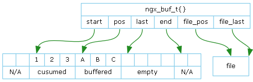

实现一个字符串。
字符串的长度，不包含结尾NULL。有了这个字段，就不用每次调用strlen()计算字符串的长度。 这是提高性能的PREPROCESS原则的应用。
指向字符串，不保证字符串以NULL结尾。 它通常是大字符串中的一个子串，为了减少或避免内存Copy，只是指针引用，所以不能保证以NULL结尾。
实现一个数组，优点是下标寻址速度快，缺点是当已申请的空间不足时，需整体重新申请整体复制。
指向数组内存空间。
数组中已经保存元素个数。
单个元素大小。
预申请空间的元素个数。
内存池。
这个数据结构并不是通常的链表，它只支持末尾加元素，不支持插入和删除元素，当已申请的空间不足时，不需整体重新申请整体复制。但它又没有数组的下标索引。
指向内存空间。
ngx_list_part_t中已经保存元素个数。
单个元素大小。
每个ngx_list_part_t预申请空间的元素个数。
内存池。
实现双向循环链表数据结构。和Linux Kernel中的list_head原理是一样的。宿主数据结构通过ngx_queue_t域成员加入链表。 由ngx_queue_t域成员在宿主结构中的偏移，已知ngx_queue_t可以得到宿主。

实现一个缓冲区。
ngx_hash_t实现一个静态HASH表。所谓表态HASH表是指一经创建，就不能再增加或删除元素。
ngx_hash_elt_t表示一个元素。
Nginx HASH表的实现不采用通常的单向链表的方式，而是采用KLV（key-length-value）方式。相比于链表方式，KLV可以减少TLB计算量。 下图是一个具体例子：